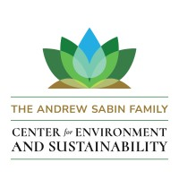

Roles
Starting
07/2026
07/2026
City University of Hong Kong (Dongguan)
08/2025 - Present
Wake Forest University
08/2025 - Present

Andrew Sabin Family Center for Environment and Sustainability
09/2022–07/2024
Society for Industrial and Applied Mathematics
Led chapter formation and activities connecting applied mathematics, machine learning, and student research culture.
Education
2021–2025
Ph.D. in Mathematics
Focused on machine learning and deep learning in computer vision, with applications in medicine and remote sensing.
2024–2025
Visiting DPhil Student in Biomedical Engineering
Worked on deep learning-based ultrasound video analysis and medical imaging workflows.
2017–2021
B.S. in Computing Mathematics
Graduated with First Class Honours and a minor in Computer Science.
2020

Visiting B.S. in Applied Mathematics
Studied applied mathematics during an exchange term in the Netherlands.